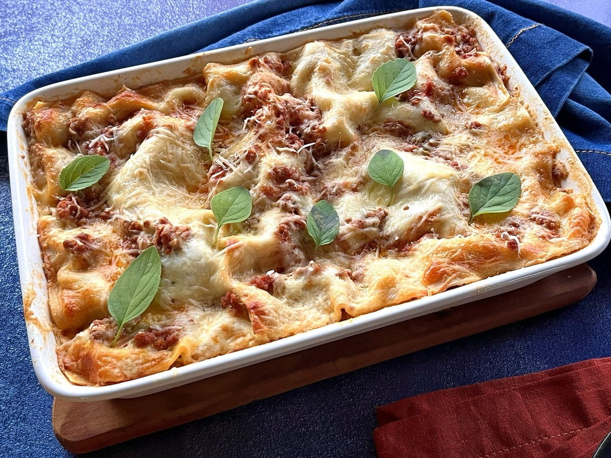

Página inicial
Lasanha

- 500 g de massa para lasanha
- 600 g de carne moída
- 800 ml de molho de tomate
- 100 g de cebola picada
- 10 g de alho picado
- 20 ml de azeite
- 800 ml de molho branco
- 400 g de mussarela
- 80 g de parmesão
- 12 g de sal
Modo de preparo
- Refogue a cebola e o alho no azeite
- Adicione a carne e cozinhe até dourar
- Acrescente o molho de tomate e cozinhe por 10 minutos
- Monte camadas de massa, molho bolonhesa, molho branco e mussarela
- Repita as camadas e finalize com parmesão
- Asse a 200°C por 35 minutos